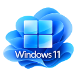

ها windows انواع
مایکروسافت در سال ۱۹۸۵ اولین نسخه از ویندوز را با نام ویندوز ۱ منتشر کرد؛ اما تولد این سیستمعامل به دو سال قبلتر از آن برمیگردد، زمانی که ویندوز ۱ بهصورت رسمی رونمایی شد. معرفی ویندوز دستاوردی بزرگ بود و راه را برای معرفی نسخههای امروزی هموار کرد. ویندوز ۱۱ هیچ شباهت ظاهری به ویندوز ۱ ندارد اما بخشی از پایه و اساس سیستمعامل جدید مایکروسافت از اولین نسخهی ویندوز به جدیدترین نسخه منتقل شده است که از آن جمله میتوان به نرمافزارهای Notepad و MS Paint اشاره کرد. در کنار نسخهی اصلی مکینتاش، ماوس نحوهی کار با کامپیوتر را برای همیشه تغییر داد. در آن زمان بسیاری معتقد بودند ویندوز ۱ تمرکز بیش از حد بر روی ماوس داشته و از دستورات تایپی غافل شده است. اولین نسخه از ویندوز نتوانست توجه بسیاری را به سمت خود جلب کند اما باعث ایجاد رقابتی شدید بین اپل، مایکروسافت و IBM شد تا کامپیوترهایی برای استفادهی عموم بسازند. در سال ۱۹۸۵، ویندوز ۱ به دو فلاپیدیسک ۲۵۶ کیلوبایتی و یک کارت گرافیک ساده نیاز داشت. اگر قصد اجرای چندین برنامه را داشتید، مجبور بودید کامپیوتری با هارد دیسک و ۵۱۲ کیلوبایت رم خریداری کنید. در دستگاههای امروزی با داشتن ۲۵۶ یا ۵۱۲ کیلوبایت رم هیچ برنامهای را نمیتوان اجرا کرد. در آن دوران اپل در زمینهی ساخت رابط کاربری گرافیکی ماوسمحور اندکی پیش بود و روی ترکیب بهینهی سختافزار و نرمافزار تمرکز داشت. از طرف دیگر، مایکروسافت سالها سیستمعاملی ارزانقیمت در قالب داس را برای کامپیوترهای IBM طراحی کرده و نام خودش را به عنوان شرکتی نرمافزاری تثبیت کرده بود. ویندوز ۱ عرصهای برای خودنمایی ماوس بود. اگر از داس استفاده کرده باشید میدانید که در آن سیستمعامل تنها قادر به تایپ کردن دستورها بودید اما در ویندوز ۱ امکان حرکت دادن نشانگر و انتخاب و حرکت دادن پنجرهها نیز فراهم شد.